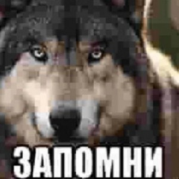

Образование
СГУ (Сара́товский национальный исследовательский госуда́рственный университе́т и́мени Н. Г. Черныше́вского)Обучался я на факультете иностранных языков и лингводидактики (ФИЯиЛ) 2014-2018. Направление: учитель английского языка.
Опыт работы
- 01.09.2017 - 01.11.2017 Springfield - магазин одежды. Продавец консультант. 2 месяца, когда было время во время учебной практики.
- 13.05.2018 - 01.11.2018 SkyEng - онлайн школа английского языка. Менеджер вводных уроков (продавал курсы). 6 месяцев.
- 06.11.2018 - 20.01.2020 KiddieEnglish - школа английского языка в Шанхае, Китай.
- 01.09.2021 - 31.05.2022 МБОУ в Москве. Учитель английского языка.
- 01.09.2017 - н.в. - репетитор английского языка. Онлайн и оффлайн преподаю английский язык индивидуально. Увеличиваю и уменьшаю количество учеников зависимо от жизненной ситуации. Сейчас решил прекратить штатную работу и увеличил количество учеников онлайн, чтобы было время обучаться на Front-End разработчика.
Сквозь годы я понял, что учителем быть я больше не хочу. Я хочу приносить пользу людям и миру с помощью прогресса. Хочу дать своим способностям задачу. Хочу, чтобы я развивался, радуясь своей профессии, финансовой стабильность и тем возможностям, которые я смогу давать людям и получать сам.
Хобби
Здесь всё очень скудно. У меня нет единого хобби. Я пробую много в жизни, разные виды спорта и прочей деятельности. Иногда я могу почитать, потренироваться, попробовать новое. Но что я делаю постоянно - это прохожу минимум 10.000 шагов каждый день.
Как я становился разработчиком
15 августа 2022 началсь мое обучение на SkillFactory по професии Front-End - разработчик. Запомните этот день!
